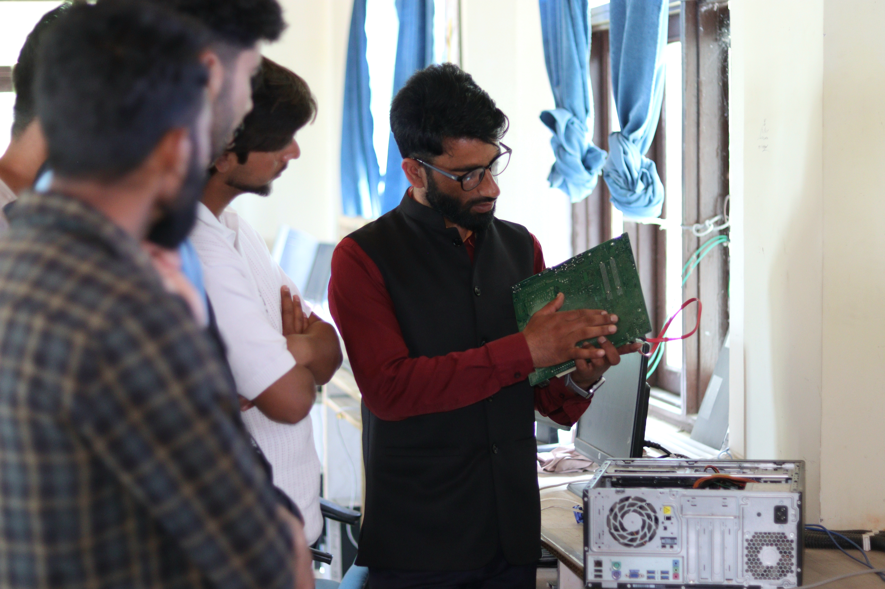
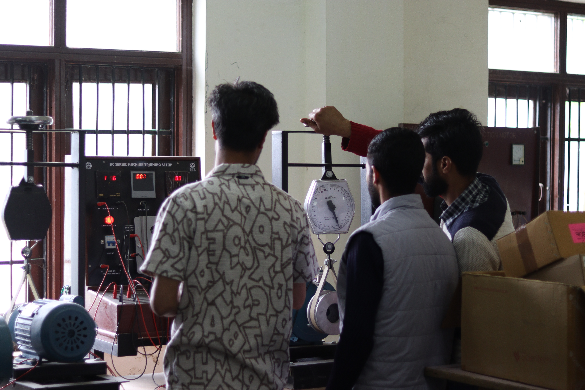
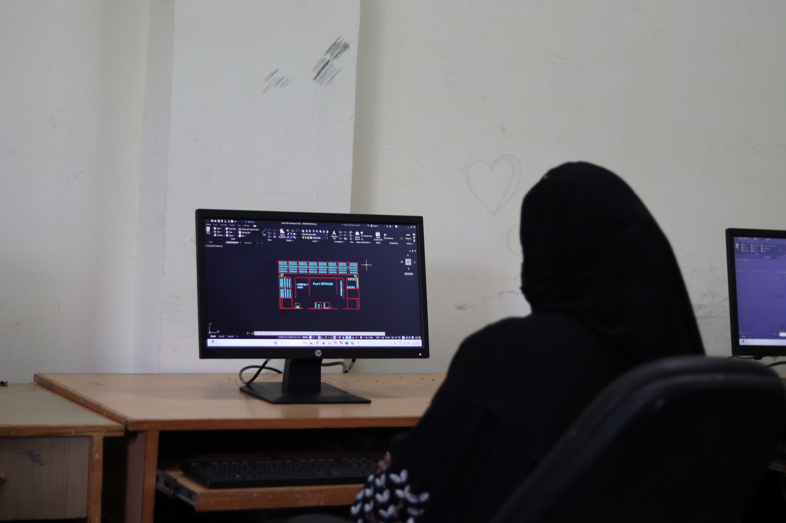
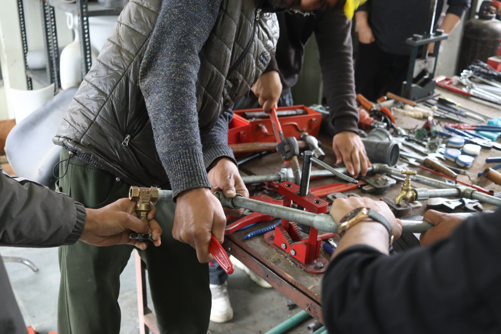
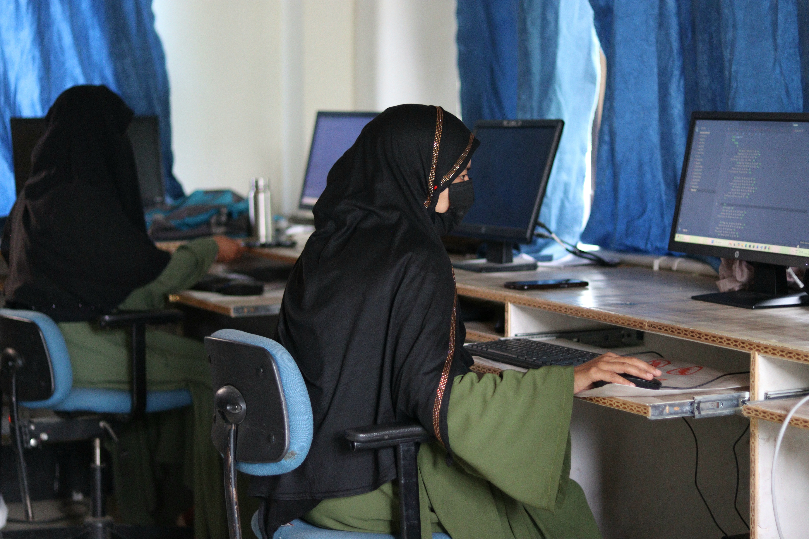
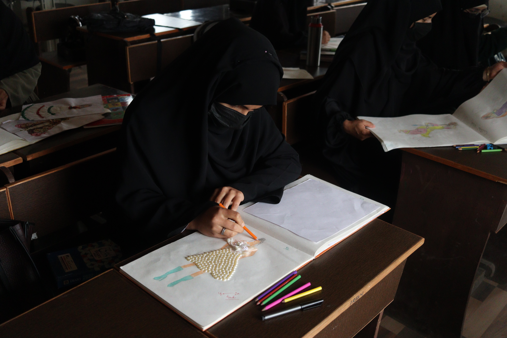

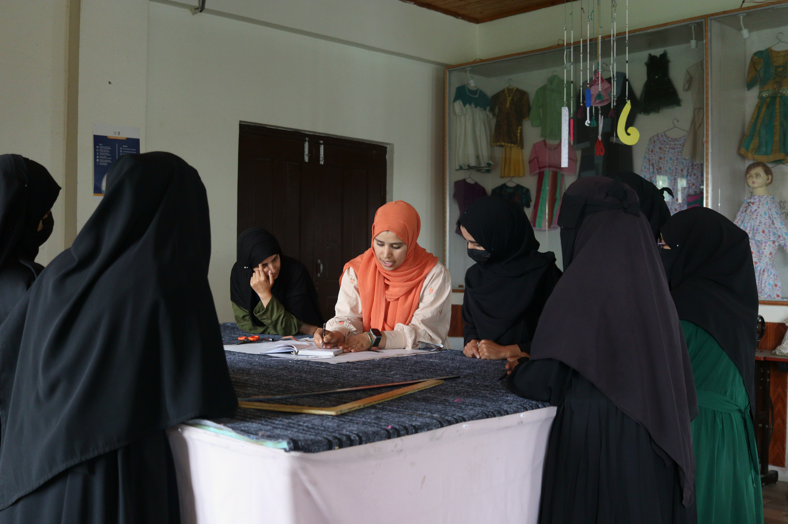
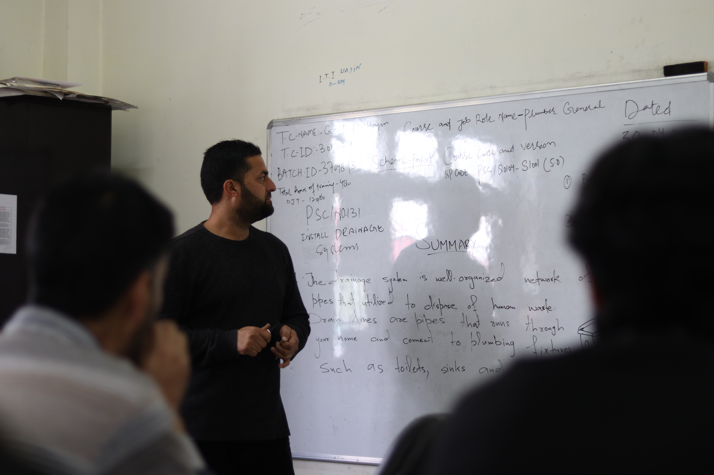
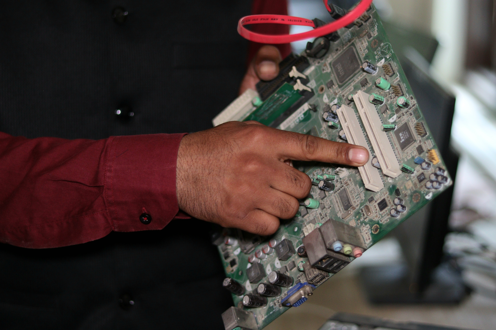
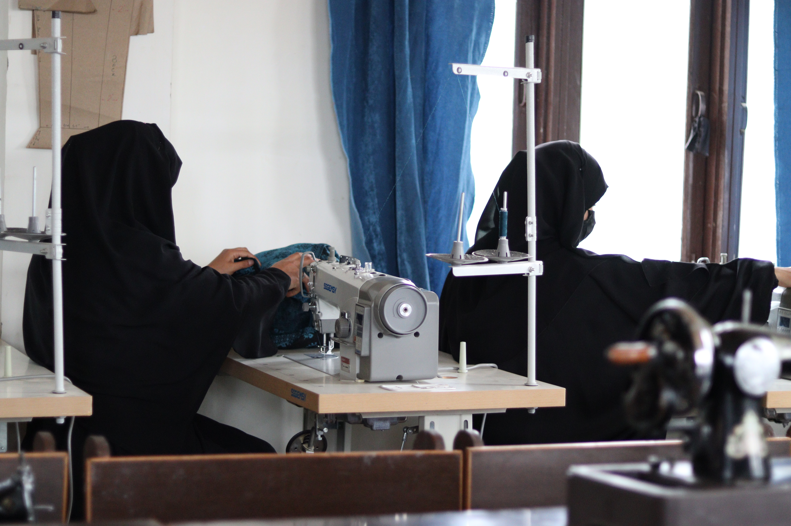
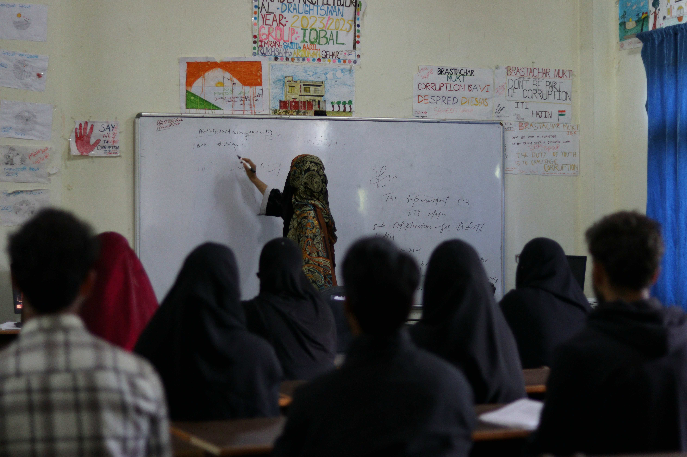
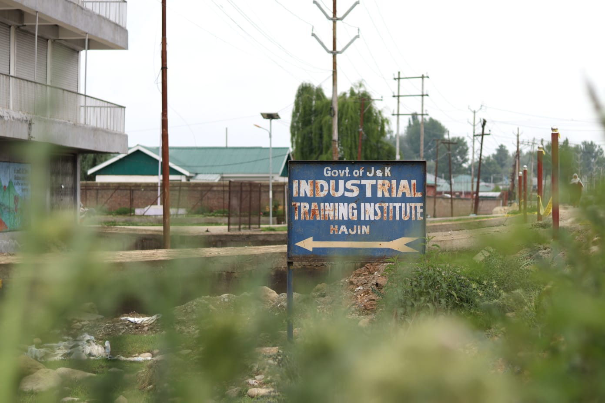
Welcome to ITI Hajin

Welcome to ITI Hajin, a premier institute committed to delivering quality technical education and skill-based training to aspiring students. At ITI Hajin, we believe in empowering individuals with the knowledge, confidence, and hands-on experience required to succeed in today's competitive world. Our institute offers a range of industry-relevant courses designed to bridge the gap between education and employment, ensuring that students are well-prepared for real-world challenges. With a team of experienced and dedicated instructors, we focus on practical learning, innovation, and personal development. Our modern facilities and well-equipped labs provide an ideal environment for students to explore, practice, and enhance their technical abilities. We also emphasize discipline, teamwork, and professional ethics, helping students grow not only as skilled workers but also as responsible individuals. At ITI Hajin, we are more than just an educational institution—we are a stepping stone toward a brighter future. Whether you are looking to start your career, upgrade your skills, or pursue new opportunities, ITI Hajin is here to guide you every step of the way. Join us and build a strong foundation for a successful and fulfilling career.
Superintendent Corner
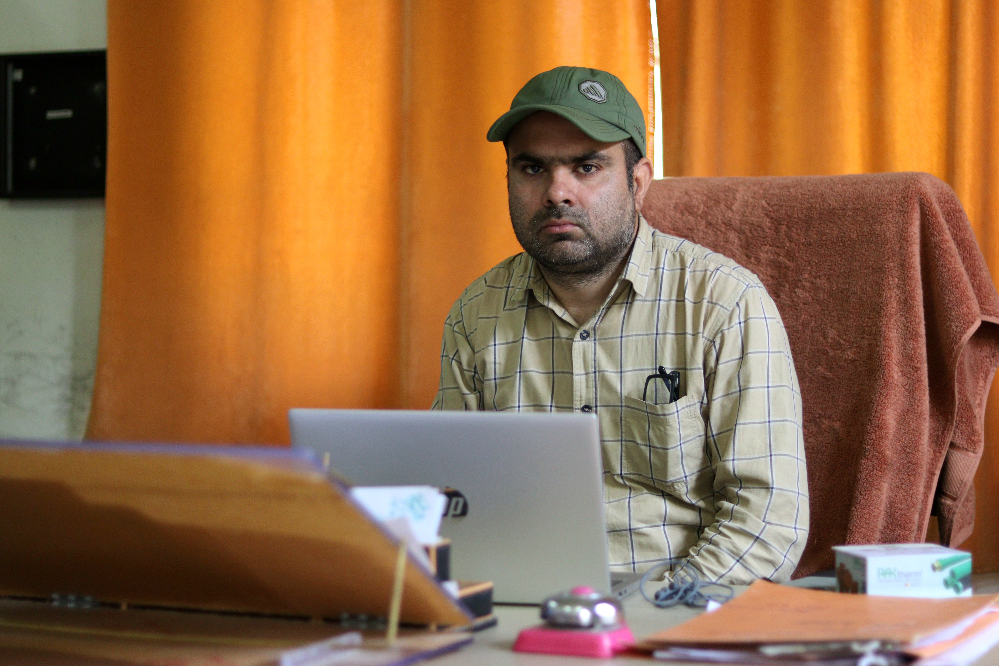
Superintendent ITI Hajin
It gives me great pleasure to welcome you to the official website of Government Industrial Training Institute (ITI) Hajin. This platform serves as a window into our institution, reflecting our commitment towards quality vocational education, technical excellence, and skill development for the youth of our region. In today's rapidly changing world, technical education has become one of the most important foundations for employment, entrepreneurship, and national progress. At ITI Hajin, we firmly believe that skill development is not only about acquiring technical knowledge, but also about building confidence, discipline, creativity, responsibility, and the ability to adapt to new challenges. Our objective is to nurture trainees who are capable of meeting industry requirements and contributing meaningfully to society. Our institute continuously strives to provide a productive learning environment where students receive practical exposure, industry-oriented training, and opportunities to enhance their professional capabilities. With dedicated instructors, modern teaching approaches, and a focus on hands-on learning, we aim to bridge the gap between education and employment. We encourage innovation, teamwork, problem-solving abilities, and lifelong learning among our trainees so they can confidently face competitive professional environments. The success of an institution is measured not only by academic achievements but also by the values instilled in its students. Therefore, alongside technical skills, we emphasize punctuality, discipline, integrity, respect, and social responsibility. We believe these qualities help shape responsible citizens and competent professionals. I take pride in acknowledging the sincere efforts of our faculty members and staff who work tirelessly to guide and support students in achieving their goals. Their dedication plays a vital role in maintaining the standards and vision of our institute. I also appreciate the trust and cooperation extended by parents and guardians, whose support remains essential in the overall development of every trainee. I urge all students to utilize their time at the institute effectively, participate actively in training programs, improve their practical skills, and remain committed to continuous self-improvement. Every skill learned today opens doors to opportunities tomorrow. The future belongs to those who are willing to learn, work hard, and adapt to changing times. As Superintendent, I remain committed to strengthening the quality of training, expanding opportunities for our trainees, and ensuring that ITI Hajin continues progressing as a center of excellence in vocational education and skill development. I extend my sincere best wishes to all our students for a bright future, successful careers, and meaningful contributions to society. May your journey at ITI Hajin become a stepping stone towards achievement, self-reliance, and lifelong success. Thank you for visiting our website, and I invite you to explore the various programs, achievements, and opportunities offered by our institute.
Student Corner
Library
We have well equipped library so that every student gets study material in campus iteslf.
Admissions
Admissions are advertised on website session to session to inform students who wish to get
enrolled.
Facilities
Best facilities for students including transport services, canteen, and medical assistance.
Tenders
Tenders regarding our campus are posted on website every now and then. Tenders are
appreciated.
Attendance
Our campus has laid strict rules to ensure proper attendance of students.
Examinations
For all of the students we conduct timely examinations to ensure courses are finished on
stipulated
time.